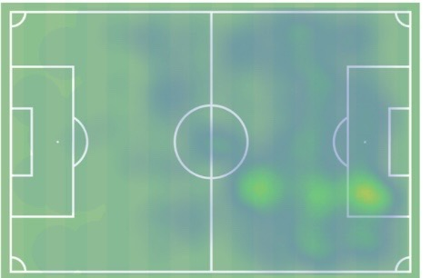

Centre Forward • IL Hødd
Low-volume striker producing strong output through finishing efficiency rather than chance generation.
Haugland profiles as a physically competitive, box-oriented striker whose primary value lies in finishing efficiency and penalty-area presence.
He is not a high-volume chance generator, but instead relies on positioning, timing, and shot selection to convert a relatively low number of opportunities into goals.
His profile is built around:
– Strong dueling ability (aerial and ground)
– Consistent presence in high-value scoring zones
– High work rate in pressing phases
– Ability to impact games without high ball involvement

Haugland’s attacking output is defined by a significant overperformance relative to expected goals (+6.6).
However, his xG per 90 (~0.30) indicates limited involvement in high-value chance creation.
This creates a clear profile:
– Not a volume shooter
– Not a chance creator
– Highly efficient finisher within limited opportunities
One of Haugland’s standout qualities is his defensive contribution.
With ~11.2 duels won per 90 and ~3.9 recoveries in the opponent’s half, he provides significant value out of possession.
This suggests:
– High pressing intensity
– Strong physical presence
– Ability to disrupt build-up play
– Contribution beyond goal scoring
The gap between goals and expected goals (+6.6) is the defining feature of this profile. This indicates production driven by finishing efficiency rather than repeatable chance volume. If finishing regresses toward xG levels, overall output is likely to decline significantly.
Projects as a role-dependent striker at a higher level.
Likely to provide value within structured attacking systems, particularly those generating consistent box entries.
Expected:
– Lower goal output if efficiency normalizes
– Continued defensive and physical contribution
– Suitable as rotation or situational striker
Haugland is a late-emerging striker defined by efficiency, physicality, and work rate. He offers clear value as a box presence and pressing forward, but his output is highly dependent on finishing rather than sustainable chance generation. Best suited as a role-specific option rather than a primary attacking focal point.